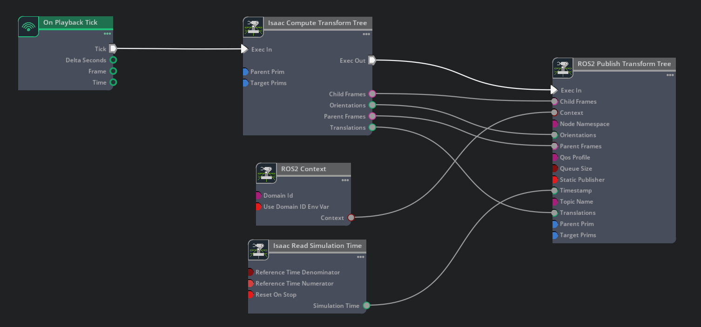
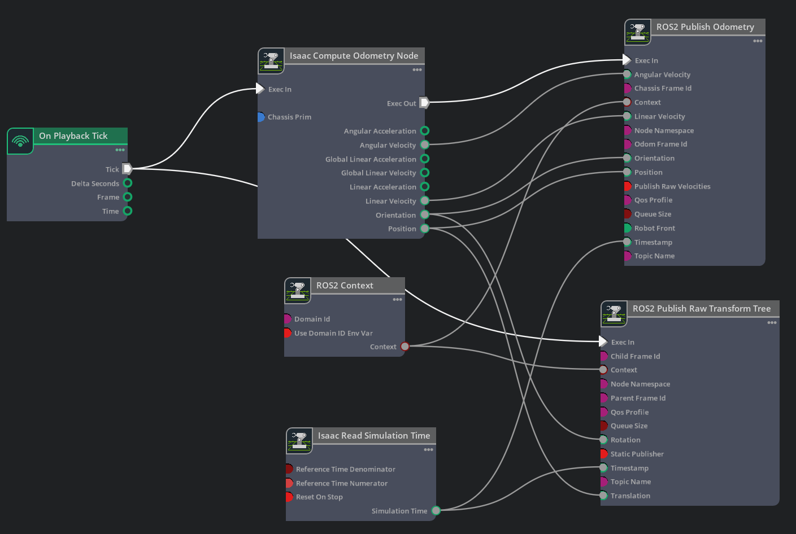
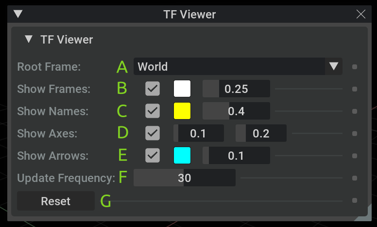
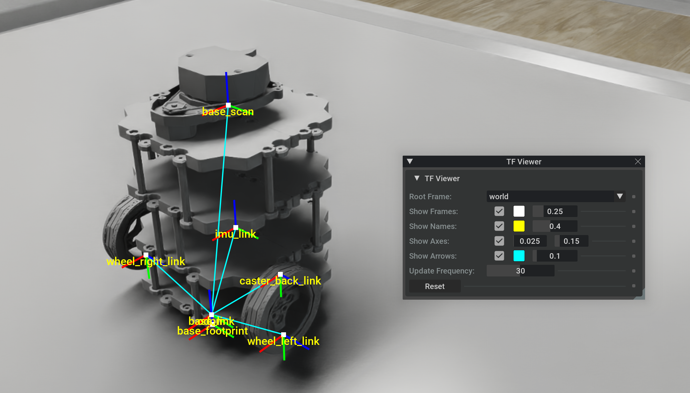
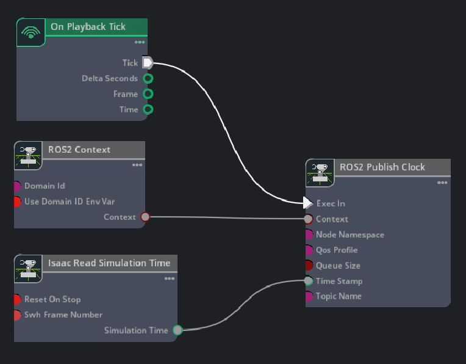
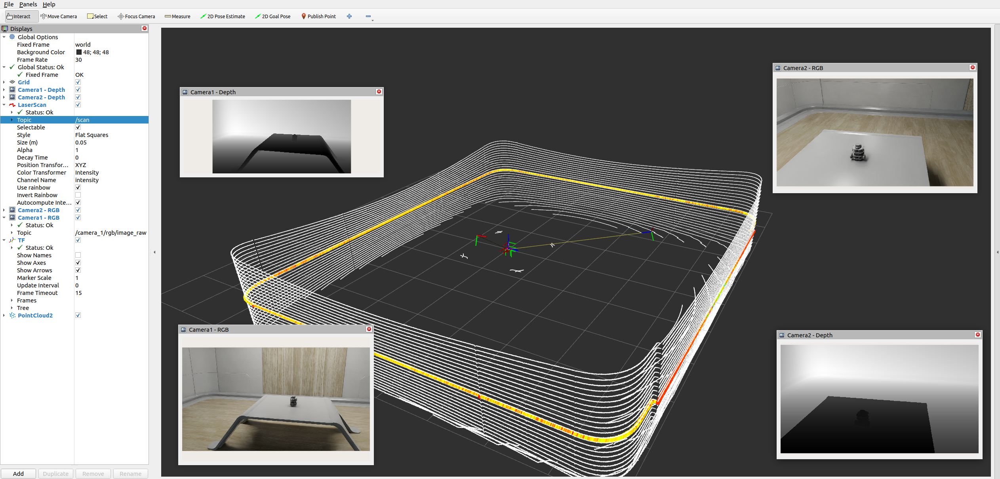

ROS2 Transform Trees and Odometry#
Learning Objectives#
이 예제에서는:
카메라 위치를 변환 트리의 일부로 게시하기 위한 변환 퍼블리셔 추가.
객체의 상대적 포즈 게시.
로봇의 오도메트리 게시.
메뉴 단축키를 사용하여 변환 및 오도메트리 퍼블리셔 생성.
Isaac Sim에서 변환 트리 보기.
Getting Started#
필수 조건
URDF Import: Turtlebot, ROS 2 Cameras, 및 RTX Lidar Sensors 튜토리얼을 완료하세요.
NVIDIA Isaac Sim을 실행하기 전에 필요한 환경 변수가 설정되고 소싱되며 ROS2 확장이 활성화되도록 ROS 2 Installation (Default)를 완료하세요.
Transform Tree Publisher#
ROS 2 카메라 튜토리얼을 이미 완료하여 스테이지에 두 개의 카메라가 있다고 가정하면, 이 카메라들을 변환 트리에 추가하여 전역 프레임에서 카메라의 위치를 추적할 수 있도록 합니다.
Transform Publisher#
Isaac Sim 6.0 이상에서 ROS 2 Publish Transform Tree는 내부적으로 프림을 해결하는 대신 Isaac Compute Transform Tree 노드에서 사전 계산된 프레임을 사용합니다. 이전 그래프를 업그레이드하는 경우 Migrating ROS2 Publish Transform Tree를 참조하세요.
Stage 패널에서
/World를 선택하면 새 Action Graph가 게시하는 카메라 옆에 생성됩니다. Window > Graph Editors > Action Graph를 열고, New Action Graph를 클릭한 다음ROS_CameraTF로 이름을 지정합니다(결과 그래프 경로:/World/ROS_CameraTF). Isaac Compute Transform Tree 노드와 ROS 2 Publish Transform Tree 노드를 추가합니다. On Playback Tick을 Compute 노드의 execIn에, Isaac Read Simulation Time을 Publish 노드의 timeStamp에 연결합니다.Compute 노드의 출력을 Publish 노드에 연결합니다: execOut → execIn, parentFrames → parentFrames, childFrames → childFrames, translations → translations, orientations → orientations.
Isaac Compute Transform Tree 노드의 Property 탭에서 Camera_1과 Camera_2를 모두 targetPrims 필드에 추가합니다.
ROS 2가 활성화된 터미널에서 변환 트리를 확인합니다:
ros2 topic echo /tf. 두 카메라가 변환 트리에 있는지 확인합니다. 뷰포트 내에서 카메라를 이동하고 카메라의 포즈가 어떻게 변경되는지 관찰합니다.
{kind=link}

Articulation Transforms#
아티큘레이션된 로봇의 각 링크의 변환을 얻으려면, ROS 2 Publish Transform Tree 노드에 공급되는 Isaac Compute Transform Tree 노드의 targetPrims 필드에 로봇의 아티큘레이션 루트를 추가합니다. 아티큘레이션 루트에 이어지는 모든 링크가 자동으로 게시됩니다.
중요
아티큘레이션된 로봇에 대해 생성된 변환 트리가 루트 링크로 잘못된 링크를 선택한 경우, 다음 단계를 사용하여 수동으로 아티큘레이션 루트 링크를 선택합니다.
Stage Tree에서 로봇의 루트 프림을 선택하고, Raw USD Properties 탭에서 Articulation Root 섹션을 찾습니다. 섹션 내 오른쪽 상단 모서리의 X를 클릭하여 삭제합니다.
Stage Tree에서 원하는 링크를 선택하고, Raw USD Properties 탭 내에서 +ADD 버튼을 클릭한 다음 Physics > Articulation Root를 추가합니다.
아티큘레이션 루트를 변경한 후 파일을 저장하고 다시 로드합니다.
Publish Relative Transforms#
기본적으로 변환은 월드 프레임을 기준으로 합니다. Turtlebot의 /base_link 변환이 /World에 상대적으로 게시되는지 확인할 수 있습니다. 카메라와 같이 다른 것에 상대적인 변환을 얻으려면 Isaac Compute Transform Tree 노드의 parentPrim 필드를 설정합니다. Compute 노드의 parentPrim 필드에 Camera_1을 추가하고, 속성 변경 사이에 시뮬레이션을 Stop하고 Play하면 /base_link 변환이 이제 Camera_1에 상대적임을 확인할 수 있습니다.
Setting Up Odometry#
로봇의 오도메트리를 설정하려면 오도메트리 ROS 메시지와 해당 변환을 게시합니다.
Turtlebot3 로봇에는
/World/tb3_burger_processed/Geometry/base_footprint/base_link에 Articulation Root API가 적용되고/World/tb3_burger_processed에IsaacRobotAPI가 적용되어isaac:physics:robotLinks가 채워져 있으므로 수동 아티큘레이션 루트 설정이 필요 없습니다.(선택적 연습) Isaac Compute Transform Tree 노드의 targetPrims 필드에 /World/tb3_burger_processed(기본값)을 임의의 ROS 2 Publish Transform Tree에 공급하는 것에 추가하면, 고정되거나 아티큘레이션된 모든 로봇 링크의 변환이
/tf토픽에 게시되는 것을 확인할 수 있습니다.
오도메트리 퍼블리셔를 설정하려면, Stage 패널에서 메인 로봇 프림
/World/tb3_burger_processed를 선택하여 새 Action Graph가 바로 그 아래 생성되도록 합니다. 로봇 상태 퍼블리셔 그래프(오도메트리, TF 트리, 그라운드 트루스 포즈 등)는 로봇의 아티큘레이션 전체에 작용하므로 단일 링크 아래가 아닌 로봇 루트에 속합니다. Window > Graph Editors > Action Graph로 이동하여 시각적 스크립팅 편집기를 열고 New Action Graph를 클릭한 다음ROS_OdomTF로 이름을 지정합니다. 결과 그래프 경로는/World/tb3_burger_processed/ROS_OdomTF입니다. 다음 이미지와 일치하는 Action Graph를 구성합니다.
Isaac Compute Odometry Node의 Property 탭에서:
Turtlebot 프림(즉,
/World/tb3_burger_processed)을 Chassis Prim 입력 필드에 추가합니다. 이 노드는 시작 위치에 대한 로봇의 위치를 계산합니다. 출력은/odomROS 2 토픽의 퍼블리셔와/odom프레임에서/base_link프레임으로 단일 변환을 게시하는 TF 퍼블리셔 모두에 공급됩니다.
ROS2 Publish Raw Transform Tree 노드의 Property 탭에서:
childFrameId 입력 필드를
base_link로 설정합니다.parentFrameId 입력 필드를
odom으로 설정합니다. 이렇게 하면 변환 트리에서 odom -> base_link 프레임 게시가 활성화됩니다.
ROS2 Publish Odometry 노드의 Property 탭에서:
chassisFrameId 입력 필드를
base_link로 설정합니다.odomFrameId 입력 필드를
odom으로 설정합니다. 이렇게 하면 변환 트리에서 odom -> base_link 프레임 게시가 활성화됩니다.
{kind=link}
참고
ROS2 Publish Odometry 노드는 완전한 3D 속도 정보를 게시합니다. 선속도와 각속도 모두 세 가지 차원(x, y, z)으로 게시되어 로봇의 운동 상태를 더 완전하게 표현합니다.
이 시점에서 우리는 오도메트리 데이터를 게시하고 있으며 변환 트리는 odom -> base_link만으로 구성됩니다. base_link 아래의 관련 로봇 프림도 변환 트리에 추가하고 싶습니다. 이를 위해 그래프에 Isaac Compute Transform Tree 노드와 ROS 2 Publish Transform Tree 노드를 추가합니다. Compute 노드의 출력(execOut, parentFrames, childFrames, translations, orientations)을 Publish 노드의 일치하는 입력에 연결하고, Publish 노드의 Exec In, Context, Timestamp 필드를 위의 다른 노드와 유사하게 연결합니다.
Isaac Compute Transform Tree 노드의 Property 탭에서:
parentPrim 입력 필드를 Turtlebot 프림 내의 base_link 경로로 설정합니다:
/World/tb3_burger_processed/Geometry/base_footprint/base_link.targetPrims 입력 필드를 다음 프림으로 설정합니다:
/World/tb3_burger_processed/Geometry/base_footprint/World/tb3_burger_processed/Geometry/base_footprint/base_link/base_scan/World/tb3_burger_processed/Geometry/base_footprint/base_link/caster_back_link/World/tb3_burger_processed/Geometry/base_footprint/base_link/imu_link/World/tb3_burger_processed/Geometry/base_footprint/base_link/wheel_left_link/World/tb3_burger_processed/Geometry/base_footprint/base_link/wheel_right_link
팁
IsaacRobotAPI가/World/tb3_burger_processed에isaac:physics:robotLinks가 채워진 상태로 적용되어 있으므로, 위의 명시적 목록 대신 targetPrims 필드에/World/tb3_burger_processed를 추가하면 전체 아티큘레이션 체인이 게시됩니다.
odom -> base_link -> <다른 로봇 링크>로 구성된 변환 트리를 게시합니다. 다음 단계는 로봇의 그라운드 트루스 위치 추적이 필요한 경우에만 필요합니다. 일반적으로 Nav2 AMCL과 같은 위치 추적을 위한 ROS 패키지가 전역 프레임과 odom 프레임 사이의 변환을 설정합니다. 그라운드 트루스 위치 추적을 설정하려면 그래프에 다른 ROS2 Publish Raw Transform Tree 노드를 추가하고 위의 이전 노드와 유사하게 Exec In, Context, Timestamp 필드를 연결합니다.
최근 추가된 ROS2 Publish Raw Transform Tree 노드의 Property 탭에서:
childFrameId 입력 필드를
odom으로 설정합니다.parentFrameId 입력 필드를
world로 설정합니다. 이렇게 하면 변환 트리에서 world -> odom 프레임 게시가 활성화됩니다.Translation 및 Rotation 필드는 연결 해제 상태로 두면 기본값인 (0.0, 0.0, 0.0) 이동 벡터(XYZ)와 (1.0, 0.0, 0.0, 0.0) 회전 사원수(IJKR)를 사용합니다. 이 회전과 이동은 로봇의 시작 포즈에 해당합니다. 로봇이 다른 위치에서 시작하면 이 필드를 해당 포즈와 일치하도록 업데이트해야 합니다.
최종 그래프가 다음과 유사한지 확인합니다:
{kind=link}
Play를 누르고 새 ROS 소싱된 터미널에서 다음 명령을 실행합니다:
ros2 run tf2_tools view_frames
생성된 PDF 파일을 열어 Isaac Sim에서 게시하는 변환 트리를 관찰합니다. 아래와 유사한지 확인합니다.
{kind=link}
Turtlebot ROS2 튜토리얼에서 설정된 모든 퍼블리셔와 구독자의 예제를 보려면 Isaac Sim Content 브라우저에서 Isaac Sim>Samples>ROS2>Scenario>turtlebot_tutorial.usd를 클릭하여 씬을 엽니다.
Graph Shortcuts#
다음 메뉴 단축키는 변환 및 오도메트리 그래프를 구성합니다:
TF Publisher
변환 퍼블리셔를 설정하려면 Tools > Robotics > ROS 2 OmniGraphs > TF Publisher로 이동합니다. ROS2 그래프가 표시되지 않으면 먼저 ROS2 브릿지를 활성화해야 합니다. 그래프를 생성하는 데 필요한 파라미터를 묻는 팝업 창이 나타납니다. 다음을 제공해야 합니다:
가지고 있는 경우 Graph Path와 Node Namespaces.
변환에서 전체 아티큘레이션 체인을 얻으려면 아티큘레이션 루트 API를 포함하는 Target Prim, 또는 프림의 단일 변환을 게시하려면 개별 프림.
변환의 참조 프레임으로 사용되는 부모 프림. 기본값은 "/World"이지만 스테이지의 모든 프레임이 될 수 있습니다.
이미 변환 퍼블리셔가 있고 게시할 프림을 더 추가하려면, 동일한 참조 프림을 가지는 한 "Add to an existing graph"와 "Add to an existing node" 박스를 모두 체크하고 그래프와 노드 경로, 기존 그래프에 추가할 새 대상 프림을 제공할 수 있습니다. 동일한 그래프에 추가하지만 다른 참조 프림을 갖고 싶다면, 새로운 변환 노드가 생성되고 틱, 컨텐트, 타임스탬프 노드가 있으면 이를 재사용합니다.
Odometry Publisher
오도메트리 퍼블리셔를 설정하려면 Tools > Robotics > ROS 2 OmniGraphs > Odometry Publisher로 이동합니다. 그래프를 생성하는 데 필요한 파라미터를 묻는 팝업 창이 나타납니다. 다음을 제공해야 합니다:
가지고 있는 경우 Graph Path와 Node Namespaces.
Articulation Root API를 포함하는 프림과 오도메트리 계산에 원점이 사용되는 섀시 프림.
Viewing the Transform Tree in Isaac Sim#
Isaac Sim의 변환 뷰어를 사용하면 뷰포트 창의 시뮬레이션된 씬과 Isaac Sim 및/또는 외부 ROS 2 노드가 게시하는 변환 트리(/tf 및 /tf_static 토픽 아래)에 그릴 수 있습니다.
isaacsim.ros2.tf_viewer를 검색하여 Extension Manager를 사용하여 Isaac Sim의 변환 뷰어 확장을 활성화합니다.확장이 활성화된 후 상단 메뉴 바에서 Window > TF Viewer를 클릭하여 변환 뷰어 제어 창을 엽니다.

창 구성 요소:
변환을 계산할 프레임.
프레임(마커)이 표시되는지 여부. 마커 색상. 마커 크기(상대적).
프레임 이름이 표시되는지 여부. 텍스트 색상. 텍스트 크기(상대적).
프레임의 축이 표시되는지 여부(RGB -> XYZ 축). 축 길이(미터). 축 두께(상대적).
자식 프레임과 부모 프레임 사이의 연결을 표시할지 여부. 선 색상. 선 두께(상대적).
프레임 변환 업데이트 빈도(Hz). 더 높은 빈도는 시뮬레이션 성능을 감소시킬 수 있습니다.
변환 트리 초기화(변환 버퍼 지우기). 예를 들어
TF_OLD_DATA경고를 지우는 데 유용합니다.
참고
변환 뷰어 창을 닫으면 표시가 중지되고 뷰포트 그림이 지워집니다.
시각화를 시작하려면 변환을 계산할 적절한 루트 프레임을 선택합니다(예: 게시된 변환 트리 사양에 따라 World 또는 world).
참고
/tf및/또는/tf_static토픽 아래에 게시가 있음에도 불구하고 시각화(또는 특정 루트 프레임)가 표시되지 않는 경우:TF Viewer 창을 열기 전에 시뮬레이션이 실행 중인지 확인하세요
TF Viewer 창을 닫고 다시 열어 변환 구독을 업데이트하세요
TF Viewer 창의 Reset 버튼을 눌러 변환 트리를 초기화하세요

{kind=link}
{kind=link}
Multiple Sensors in RViz2#
참고
Windows 11에서는 머신 구성에 따라 일부 대역폭이 많이 사용되는 토픽이 WSL의 RViz2에서 시각화에 사용하지 못할 수 있습니다.
RViz2에서 여러 센서를 표시하려면 모든 메시지가 동기화되고 타임스탬프가 올바르게 지정되도록 몇 가지 중요한 사항이 있습니다.
Simulation Timestamp
Isaac Read Simulation Time을 모든 게시 노드의 타임스탬프에 타임스탬프를 공급하는 노드로 사용합니다.
ROS 2 clock
Running ROS 2 Clock Publisher 튜토리얼에 표시된 것처럼 그래프를 설정하여 시뮬레이션 시간을 ROS 2 clock 토픽에 게시할 수 있습니다:
{kind=link}

frameId and topicName
RViz에서 모든 센서와 TF 트리를 한 번에 시각화하려면 RViz가 이를 모두 인식하도록 frameId와 topicName이 특정 규칙을 따라야 합니다. 아래 표는 이러한 규칙을 대략적으로 설명합니다. 아래의 멀티 센서 예제를 관찰하려면 Isaac Sim Content 브라우저에서 Isaac Sim>Samples>ROS2>Scenario>turtlebot_tutorial.usd를 클릭하여 찾을 수 있는 USD 에셋을 참고하세요.
소스
frameId
nodeNamespace
topicName
유형
Camera RGB
(device_name)_(data_type)
(device_name)/(data_type)
image_raw
rgb
Camera Depth
(device_name)_(data_type)
(device_name)/(data_type)
image_rect_raw
depth
Lidar
base_scan
scan
레이저 스캔
Lidar
base_scan
point_cloud
point_cloud
TF
tf
tf
아래의 RViz 이미지를 관찰하려면 시뮬레이션이 재생 중인지 확인합니다. ROS2 소싱된 터미널에서 다음 명령을 사용하여 제공된 구성으로 엽니다:
ros2 run rviz2 rviz2 -d <ros2_ws>/src/isaac_tutorials/rviz2/camera_lidar.rviz
RViz 창 로딩이 완료되면 왼쪽의 Display 패널 내에서 센서 스트림을 활성화하거나 비활성화할 수 있습니다.
{kind=link}

중요
RViz2 노드를 실행한 후 use_sim_time ROS2 파라미터가 true로 설정되어 있는지 확인합니다.
이렇게 하면 RViz2가 Lidar 데이터 포인트의 위치를 보간할 때 특히 시뮬레이션 데이터와 동기화됩니다.
새 ROS2 소싱된 터미널에서 다음 명령을 사용하여 파라미터를 설정합니다:
ros2 param set /rviz use_sim_time true
Summary#
이 튜토리얼에서 다룬 내용:
센서와 전체 아티큘레이션 트리를 게시하기 위한 변환 퍼블리셔
개별 변환을 게시하기 위한 원시 변환 퍼블리셔
Turtlebot을 위한 오도메트리 퍼블리셔와 변환 퍼블리셔 설정
Isaac Sim의 뷰포트에서 변환 뷰어 표시
오도메트리 메시지에서 선속도와 각속도 모두에 대한 완전한 3D 속도(x, y, z) 게시
Next Steps#
ROS2 OmniGraph 노드의 게시 속도를 설정하는 방법을 배우기 위해 ROS2 튜토리얼 시리즈의 다음 튜토리얼인 ROS2 Setting Publish Rates로 계속 진행하세요.
Further Learning#
ROS 2 Publish Transform Tree에서 사용되는 특수한 "가장 높은 조상 우선" 규칙을 포함한 자동 생성된 토픽 네임스페이스는 Automatic ROS 2 Namespace Generation에서 다룹니다.